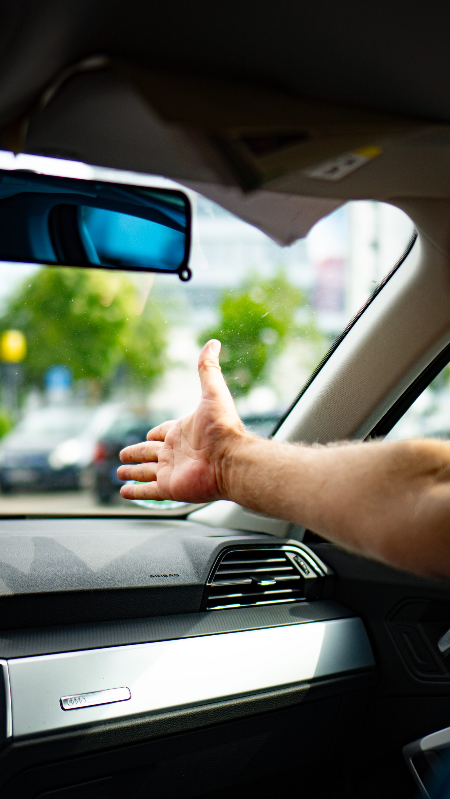

Sicher, entspannt und souverän zum Führerschein
die BSD UG ist eure Fahrschule in Gerlingen – geführt von einem Fahrlehrer mit über 30 Jahren Erfahrung. Vom Pkw- und Motorradführerschein bis zur Berufskraftfahrer-Qualifizierung begleiten wir euch strukturiert nach den Vorgaben der Fahrschüler-Ausbildungsordnung.
Ferienkurs im September – jetzt Platz sichern
Kompakter Intensivkurs für Klasse B vom 14.09. bis 19.09.2026 – ideal, um den Führerschein in einer Woche spürbar voranzubringen. Motorrad-Intensivkurs auf Anfrage. Plätze sind begrenzt.
| Termin | Uhrzeit |
|---|---|
| Mo, 14.09. | 19:00 Uhr |
| Di, 15.09. | 18:00 Uhr |
| Mi, 16.09. | 19:00 Uhr |
| Do, 17.09. | 18:00 Uhr |
| Sa, 19.09. | 09:00–10:30 Uhr |
| Sa, 19.09. | 10:30–12:00 Uhr |
Preise für Klasse B, Fahrstunde à 45 Min. Vollständige Preisliste (auch für andere Klassen) auf der Preise-Seite.
Daniel Pitesa – seit 30 Jahren Fahrlehrer
Ich bin seit über 30 Jahren als Fahrlehrer tätig und habe 2016 die BSD UG in Gerlingen gegründet. Mir ist wichtig, dass ihr die Fahrausbildung entspannt und gut vorbereitet durchlauft – strukturiert nach den Vorgaben der Fahrschüler-Ausbildungsordnung, aber ohne unnötigen Druck.
Ob Theorieunterricht, erste Fahrstunden oder die Prüfungsvorbereitung im Prüfgebiet Leonberg: Ich begleite euch persönlich durch die gesamte Ausbildung.
Vom ersten Führerschein bis zur Berufsqualifikation
Ein Überblick unserer wichtigsten Bereiche. Alle Klassen, Weiterbildungen und Zusatzqualifikationen findet ihr auf der Kurse-Seite.
Pkw & Motorrad
Klassen B, BE, A, A1, AM – der klassische Einstieg in die eigene Mobilität.
LKW & Bus
Klassen C, CE, C1, C1E, D, DE für alle, die beruflich auf großen Fahrzeugen unterwegs sein möchten.
Weiterbildung & Spezialkurse
BKF-Grundqualifizierung, Modul-Weiterbildung (Schlüsselzahl 95), Erste-Hilfe, ADR, Ladungssicherung.
Strukturiert, transparent, nach FahrschAusbO
Deine Ausbildung folgt den gesetzlichen Vorgaben der Fahrschüler-Ausbildungsordnung – wir halten dich bei jedem Schritt auf dem Laufenden.
Anmeldung & Grundstoff
Theorieunterricht: allgemeiner Grundstoff, der für alle Führerscheinklassen gilt.
Zusatzstoff & erste Fahrstunden
Klassenspezifischer Theorieteil plus die ersten praktischen Übungsstunden.
Sonderfahrten
Pflichtfahrten bei Dunkelheit, auf der Autobahn und über Land – rund um Gerlingen, Ditzingen und das Prüfgebiet Leonberg.
Prüfungsvorbereitung
Theoretische und praktische Prüfung – wir bereiten euch gezielt und realistisch vor.
Fahrschule für Gerlingen, Ditzingen & Leonberg
Unser Standort ist in Gerlingen, Fahrstunden und Sonderfahrten finden auch in Ditzingen und im Prüfgebiet Leonberg statt.
Fahrschule Gerlingen
Unser Standort in der Leonberger Str. 40 – Theorieunterricht und Anmeldung direkt vor Ort.
Fahrschule Ditzingen
Fahrstunden und Übungsfahrten auch für Fahrschüler:innen aus Ditzingen und Umgebung.
Fahrschule Leonberg
Das Prüfgebiet Leonberg gehört zu unserer Sonderfahrten- und Prüfungsvorbereitung.
Fahralltag rund um Gerlingen & Leonberg

Was unsere Fahrschüler sagen
„Der Theorieunterricht ist nicht trocken zuhören, sondern hier wird der Schüler aktiv eingebunden.“
„Super Fahrschule, der Theorieunterricht abwechslungsreich gestaltet und nicht nur Monologe seitens des Fahrlehrers.“
„Die Fahrschule setzt beim Theorieunterricht auf moderne Lernmethoden anstatt Frontalunterricht.“
Fragen rund um Fahrschule & Führerschein in Gerlingen
Was kostet der Führerschein bei der BSD UG in Gerlingen?
Die Kosten hängen von der gewählten Führerscheinklasse und der Anzahl benötigter Übungsstunden ab. Unsere aktuelle Preisliste für Klasse B, A, B196 und BE findest du auf der Preise-Seite.
Wie lange dauert die Führerscheinausbildung?
Das hängt vom individuellen Lernfortschritt ab. Nach Grund- und Zusatzstoff im Theorieunterricht sowie den vorgeschriebenen Sonderfahrten (Autobahn, Überland, Nacht) meldest du dich zur theoretischen und praktischen Prüfung an – bei regelmäßigem Unterricht sind einige Monate realistisch.
Bietet ihr begleitetes Fahren ab 17 (BF17/B17) an?
Ja, die Ausbildung für Klasse B ist auch als begleitetes Fahren ab 17 möglich – du kannst so bereits vor dem 18. Geburtstag mit einer Begleitperson Fahrpraxis sammeln.
In welchem Gebiet bietet ihr Fahrstunden an?
Unser Standort ist in Gerlingen, Fahrstunden und Sonderfahrten finden auch in Ditzingen und im Prüfgebiet Leonberg statt. Mehr dazu auf unseren Seiten für Ditzingen und Leonberg.
Wie melde ich mich bei der BSD UG an?
Ganz einfach über unser Anmeldeformular. Wir melden uns danach innerhalb von 1–2 Werktagen bei dir, um alle Details zu besprechen.
Bereit für deinen Führerschein?
Trag dich unverbindlich ein – wir melden uns innerhalb von 1–2 Werktagen bei dir.
Zur Anmeldung